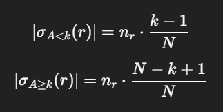
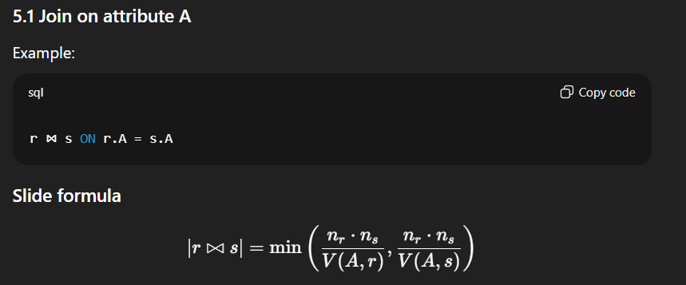
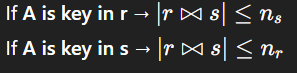

r be a relation:
n(r) = number of tuples in r b(r) = number of blocks occupied by r f(r) = number of tuples per block in r = n(r) / b(r) V(A,r) = number of distinct values of attribute A in r
Values of A are uniformly distributed.
on average, each value of A appears n(r) / V(A,r) times in r.
|σA=c(r)| = n(r) / V(A,r)
if A is a key, then V(A,r) = n(r) and |σA=c(r)| = 1



Two-Phase Locking (2PL)
A transaction has two phases:
If it releases a lock and later acquires another -> NOT 2PL
Strict 2PL
A transaction must hold all its exclusive locks until commit/abort.
Rigorous 2PL All locks (S and X) are held until commit/abort.
schedule is serializable if equivalent to a serial schedule. schedule is strict. recovery is easy (because no transaction can read uncommitted data so there's no cascading aborts).
Strict -> Cascadeless -> Recoverable
Write-Ahead Logging (WAL) - Before a data page is written to disk, all log records describing changes to that page must be written to stable storage.
AFTER A CRASH:
UNDO TRANSACTIONS THAT HAVE TI START BUT NOT TI COMMIT
REDO TRANSACTIONS THAT HAVE TI COMMIT.
Immediate update: changes are written to disk as soon as they are made. Deferred update: changes are written to disk only at commit time.
Normal checkpoint:
Fuzzy checkpoint (modern systems):
Problem:
Two-Phase Commit (2PC) Protocol
Each participant writes <Ti, PREPARE> to log and replies YES (can commit) or NO (must abort))
After voting YES, participant is in uncertain state: it has promised to commit but not yet committed.
IF ALL VOTE YES:
IF ANY VOTE NO:
coordinator writes
sends ABORT to all participants
Participants follow coordinator's decision and log it
Main Drawbacks of 2PC:
2PC IS BLOCKING
If the coordinator crashes after sending PREPARE but before sending COMMIT/ABORT, participants cannot decide on their own
they must wait or ask other participants (termination protocol)
Coordinator fails after senting COMMIT to site A, but before sending it to site B. what does B do?